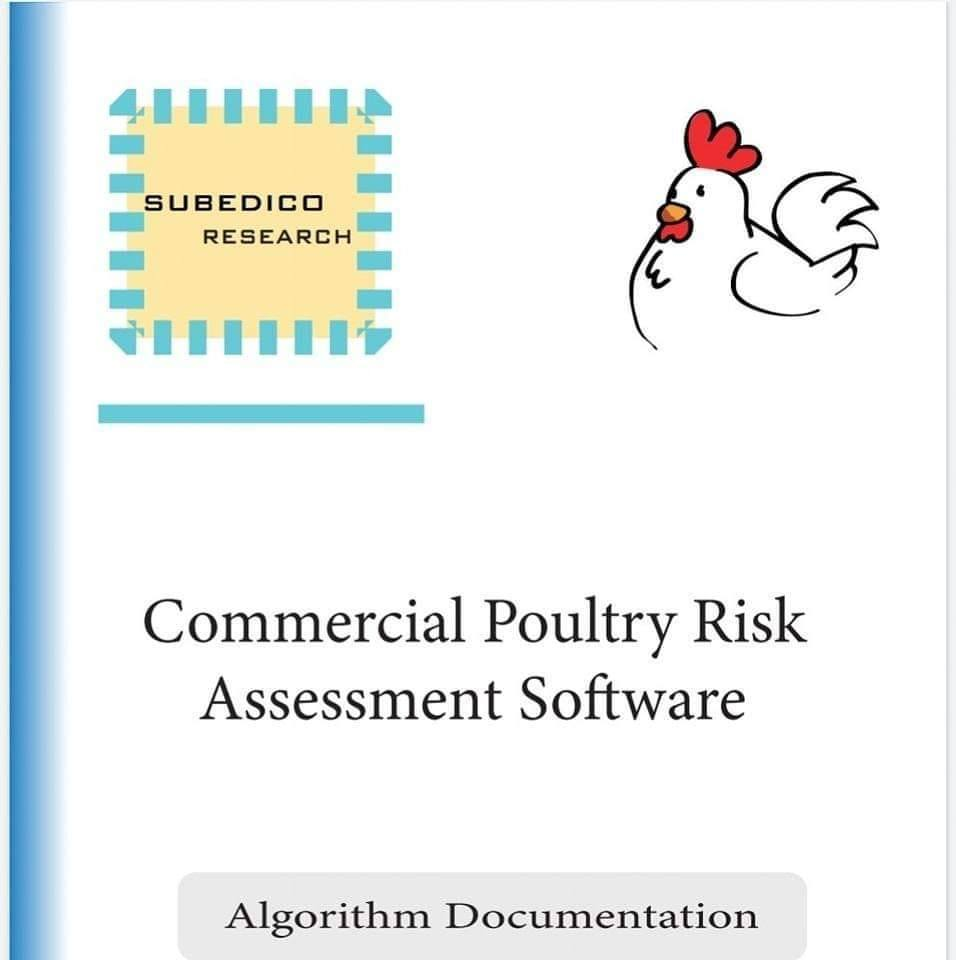

This is a beta (β) website, a part of the Protein O' Protein Project.
Domain maintained and © by SUBEDICO

Soon to be released: Commercial Poultry Risk Assessment Software for Happy & Organic Chicken Production
agfood, agriculture, farming, farmbot, precision farming, agroforestry, agritech, agtech, vertical farming, sustainable agriculture, regenerative farming, precision farming
clean eating, healthy food, snacks, meal plan, keto meal plan, weight loss meal plan, whole food plant based diet, diet plan for weight loss, healthy eating, healthy diet, personalised nutrition, personalized nutrition
vegan protein, protein, vegetarian protein, oat milk, plant-based protein, vegan protein sources, protein snacks, tofu protein, high protein snacks, high protein breakfast, protein alternatives
aquaculture, fisheries, trout fisheries, fish farming, marine stewardship council, fish farming, carp fishing, sustainable fish, RAS fish, cage farming